LOOK23: one pool, add runners without a repository
Research note. Real app, mocked API, Phosphor dark. Desktop 1300 and phone 393.
Baseline (today)
Add runners, asks Repository, 1300 Add runners, asks Repository, 393
Add runners, asks Repository, 393
Runners list, 1300 Runners list, 393
Runners list, 393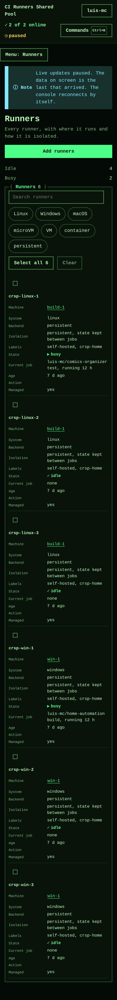
Overview, 1300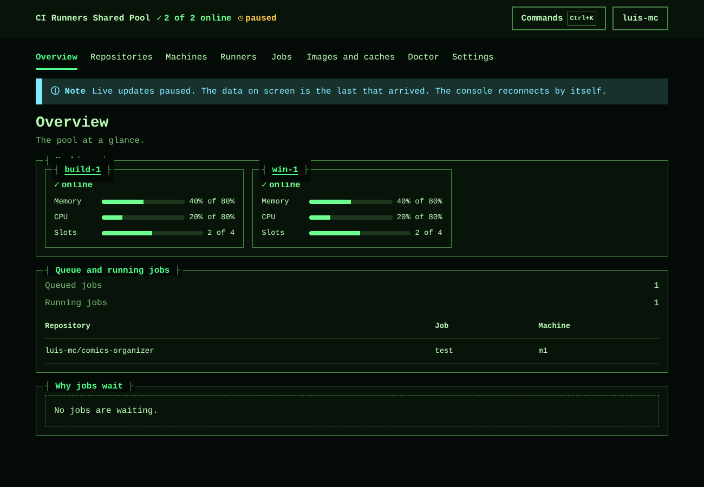
Overview, 393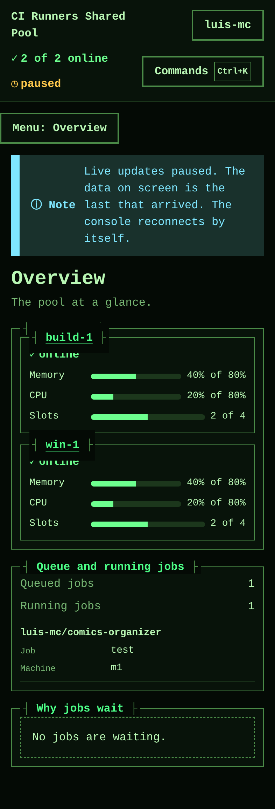
Machine page, 1300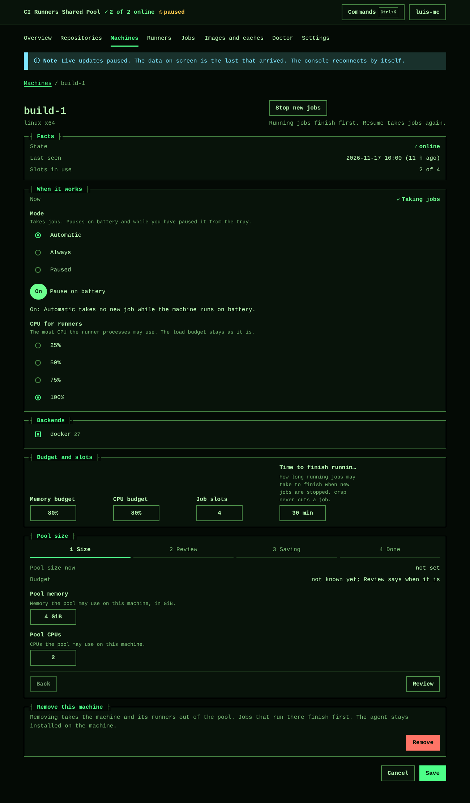
Machine page, 393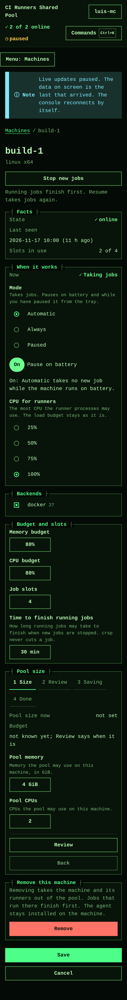
Option A: Add runners without repository, slots
Add runners, 1300 Add runners, 393
Add runners, 393
Runners list, 1300 Runners list, 393
Runners list, 393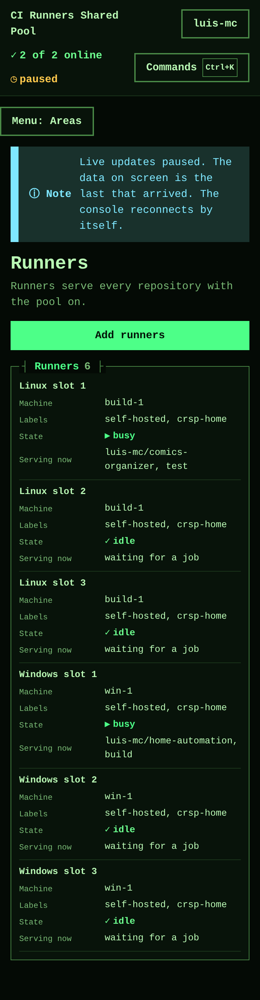
Option B: A + grouped by machine, pool capacity
Runners by machine, 1300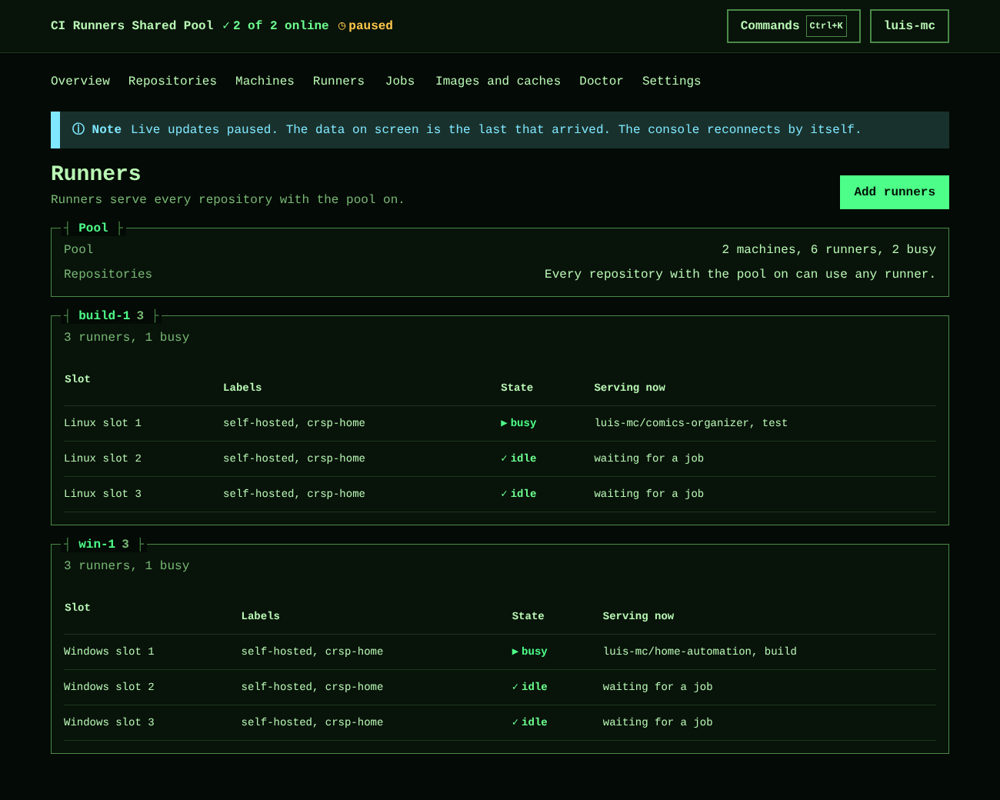
Runners by machine, 393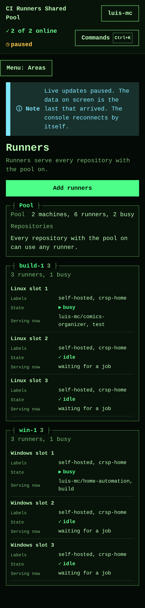
Option C: steppers on machine page, read-only Runners
Machine page, 1300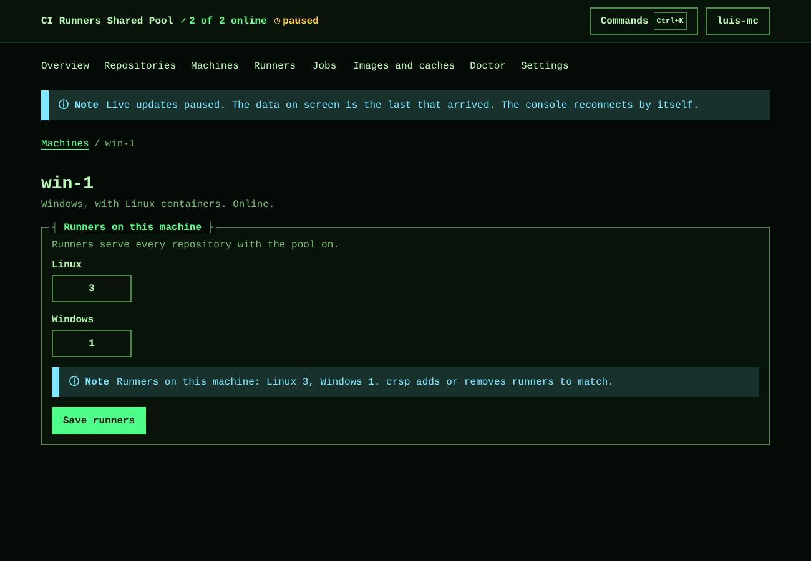
Machine page, 393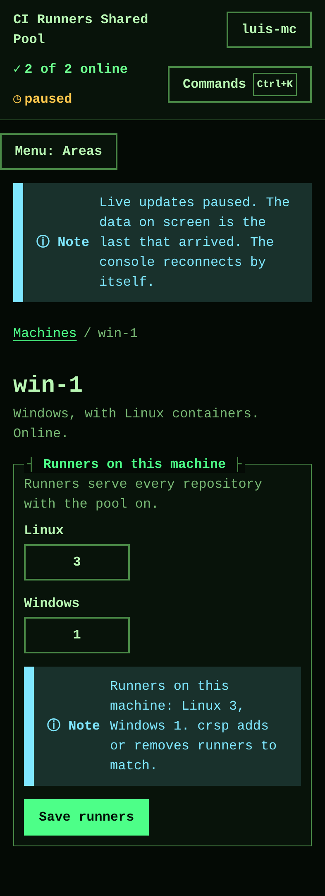
Runners (read-only), 1300 Runners (read-only), 393
Runners (read-only), 393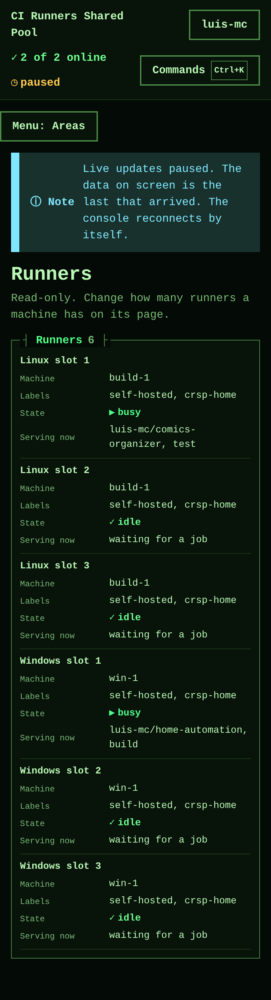
How crsp works strip
Overview with strip, 1300 Overview with strip, 393
Overview with strip, 393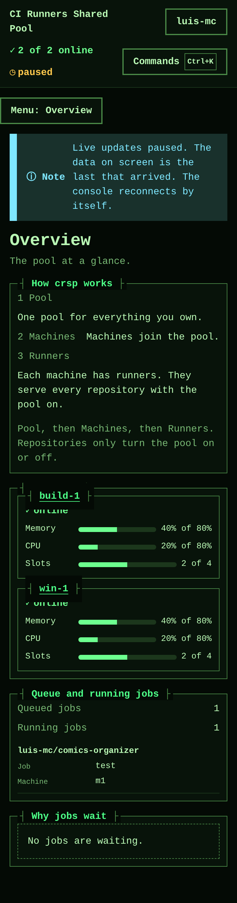